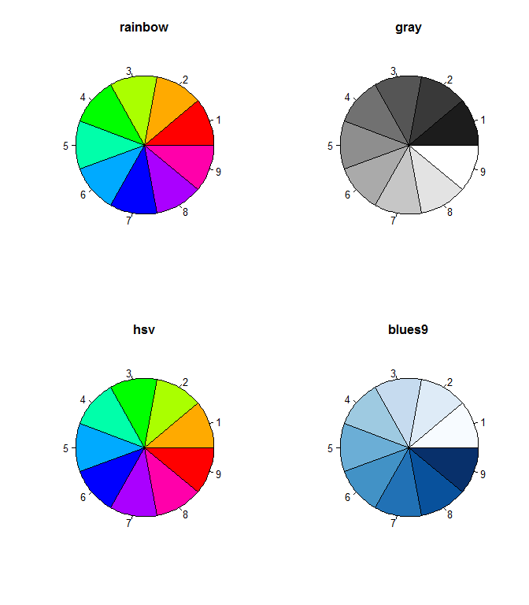
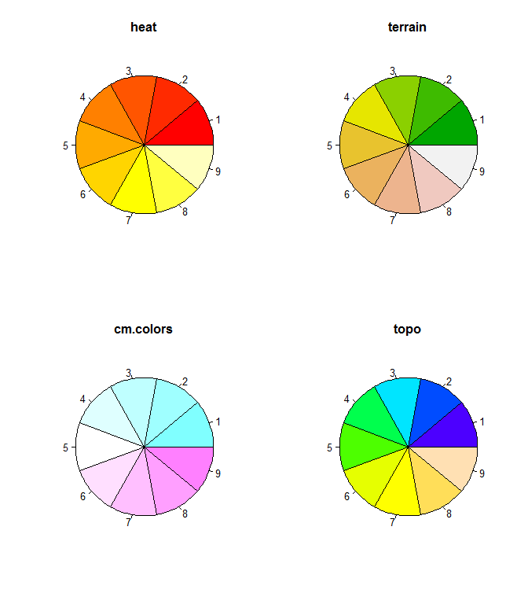
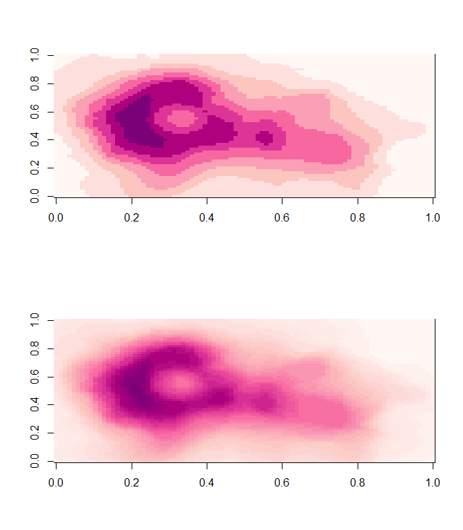
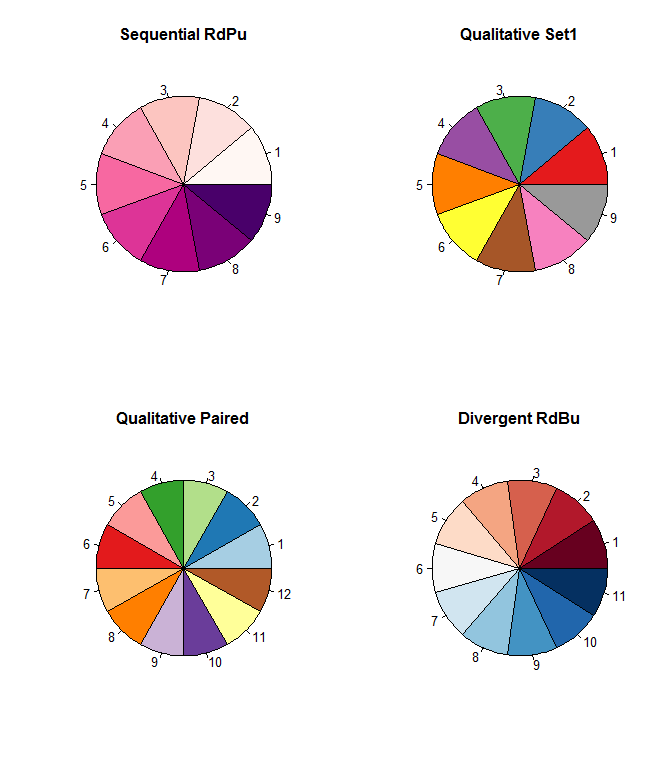
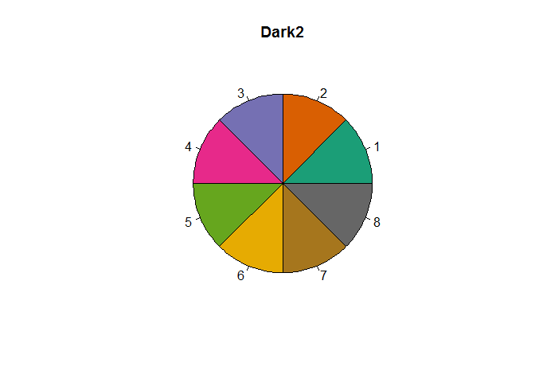
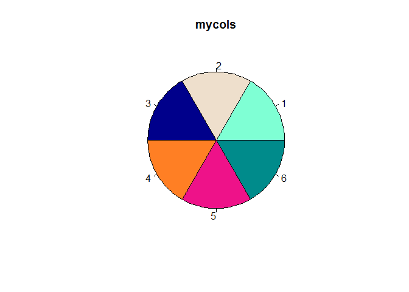
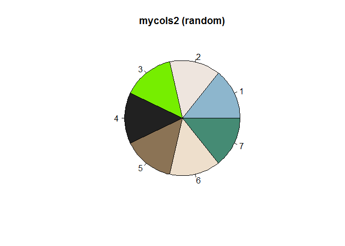

Plot Snippets - Colours
Foreword
- Output options: the ‘tango’ syntax and the ‘readable’ theme.
- Snippets and results.
Default colours¶
1 2 3 | # Set palette('default') palette() |
1 2 | ## [1] "black" "red" "green3" "blue" "cyan" "magenta" "yellow" ## [8] "gray" |
1 2 3 4 5 6 7 | # Show par(mfrow = c(1, 2)) n <- 8 pie(rep(1, n), col = FALSE, main = 'colourless') n <- 8 pie(rep(1, n), col = palette(), main = 'default') |

1 | par(mfrow = c(1, 1)) |
Basic colours¶
1 2 3 | # 8 types times 9 tones n <- 9 rainbow(n, s = 1, v = 1, start = 0, end = max(1, n - 1)/n, alpha = 1) |
1 2 | ## [1] "#FF0000FF" "#FFAA00FF" "#AAFF00FF" "#00FF00FF" "#00FFAAFF" "#00AAFFFF" ## [7] "#0000FFFF" "#AA00FFFF" "#FF00AAFF" |
1 2 | m <- (1:n)/n gray(m) |
1 2 | ## [1] "#1C1C1C" "#393939" "#555555" "#717171" "#8E8E8E" "#AAAAAA" "#C6C6C6" ## [8] "#E3E3E3" "#FFFFFF" |
1 | hsv(m, s = 1, v = 1, alpha = 1) |
1 2 | ## [1] "#FFAA00FF" "#AAFF00FF" "#00FF00FF" "#00FFAAFF" "#00AAFFFF" "#0000FFFF" ## [7] "#AA00FFFF" "#FF00AAFF" "#FF0000FF" |
1 | blues9
|
1 2 | ## [1] "#F7FBFF" "#DEEBF7" "#C6DBEF" "#9ECAE1" "#6BAED6" "#4292C6" "#2171B5" ## [8] "#08519C" "#08306B" |
1 | heat.colors(n, alpha = 1) |
1 2 | ## [1] "#FF0000FF" "#FF2A00FF" "#FF5500FF" "#FF8000FF" "#FFAA00FF" "#FFD500FF" ## [7] "#FFFF00FF" "#FFFF40FF" "#FFFFBFFF" |
1 | terrain.colors(n, alpha = 1) |
1 2 | ## [1] "#00A600FF" "#3EBB00FF" "#8BD000FF" "#E6E600FF" "#E8C32EFF" "#EBB25EFF" ## [7] "#EDB48EFF" "#F0C9C0FF" "#F2F2F2FF" |
1 | cm.colors(n, alpha = 1) |
1 2 | ## [1] "#80FFFFFF" "#9FFFFFFF" "#BFFFFFFF" "#DFFFFFFF" "#FFFFFFFF" "#FFDFFFFF" ## [7] "#FFBFFFFF" "#FF9FFFFF" "#FF80FFFF" |
1 | topo.colors(n, alpha = 1) |
1 2 | ## [1] "#4C00FFFF" "#004CFFFF" "#00E5FFFF" "#00FF4DFF" "#4DFF00FF" "#E6FF00FF" ## [7] "#FFFF00FF" "#FFDE59FF" "#FFE0B3FF" |
1 2 3 4 5 6 7 | # Show par(mfrow = c(2, 2)) pie(rep(1, n), col = rainbow(n, alpha = 1), main = 'rainbow') pie(rep(1, n), col = gray(m), main = 'gray') pie(rep(1, n), col = hsv(m, alpha = 1), main = 'hsv') pie(rep(1, n), col = blues9, main = 'blues9') |

1 2 3 4 | pie(rep(1, n), col = heat.colors(n, alpha = 1), main = 'heat') pie(rep(1, n), col = terrain.colors(n, alpha = 1), main = 'terrain') pie(rep(1, n), col = cm.colors(n), main = 'cm.colors') pie(rep(1, n), col = topo.colors(n, alpha = 1), main = 'topo') |

1 | par(mfrow = c(1, 1)) |
RColorBrewer examples¶
1 2 3 4 | library(RColorBrewer) # Show all display.brewer.all() |

1 2 3 4 | # Pick a palette n <- 8 colors <- brewer.pal(n, "BuPu") colors |
1 2 | ## [1] "#F7FCFD" "#E0ECF4" "#BFD3E6" "#9EBCDA" "#8C96C6" "#8C6BB1" "#88419D" ## [8] "#6E016B" |
1 2 3 4 5 6 | par(mfrow = c(1, 2)) pie(rep(1, n), col = colors, main = 'Sequential RdPu') # Interpolate these colors pal <- colorRampPalette(brewer.pal(n, 'RdPu')) pal(8) |
1 2 | ## [1] "#FFF7F3" "#FDE0DD" "#FCC5C0" "#FA9FB5" "#F768A1" "#DD3497" "#AE017E" ## [8] "#7A0177" |
1 | pie(rep(1, n), col = pal(8), main = 'Interpolated RdPu') |

1 2 3 4 5 | # Apply data(volcano) par(mfrow = c(2, 1)) image(volcano, col = pal(8)) image(volcano, col = pal(30)) |

1 | par(mfrow = c(1, 1)) |
1 2 3 4 5 6 7 8 9 10 11 | # Show samples par(mfrow = c(2, 2)) n = 9 pie(rep(1, n), col = brewer.pal(n, 'RdPu'), main = 'Sequential RdPu') n = 9 pie(rep(1, n), col = brewer.pal(n, 'Set1'), main = 'Qualitative Set1') n = 12 pie(rep(1, n), col = brewer.pal(n, 'Paired'), main = 'Qualitative Paired') n = 11 pie(rep(1, n), col = brewer.pal(n, 'RdBu'), main = 'Divergent RdBu') |

1 | par(mfrow = c(1, 1)) |
1 2 3 4 | # Show n = 8 darkcols <- brewer.pal(n, 'Dark2') pie(rep(1, n), col = darkcols, main = 'Dark2') |

Building a palette¶
1 2 | # All head(colors()) |
1 2 | ## [1] "white" "aliceblue" "antiquewhite" "antiquewhite1" ## [5] "antiquewhite2" "antiquewhite3" |
1 | length(colors()) # 657 |
1 | ## [1] 657 |
1 2 3 4 5 6 7 8 | # Create mycols <- colors()[c(8, 5, 30, 53, 118, 72)] # # or # mycols <- c('aquamarine', 'antiquewhite2', 'blue4', 'chocolate1', 'deeppink2', 'cyan4') # Show n = 6 pie(rep(1, n), col = mycols, main = 'mycols') |

1 2 3 4 5 6 7 8 | # Generate randomly cl <- colors(distinct = TRUE) set.seed(15887) # to set random generator seed mycols2 <- sample(cl, 7) # Show n = 7 pie(rep(1, n), col = mycols2, main = 'mycols2 (random)') |
